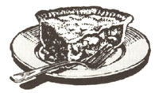
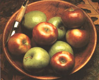
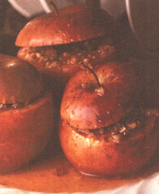

As far as I'm concerned, few things compare to biting into a crisp apple at the height of autumn. So you can imagine my ecstasy when we decided to move to a farm with an apple orchard, in Michigan's Upper Peninsula. City slickers that we were, we believed bushels of apples would effortlessly tumble into our baskets. Neighboring farmers, on the other hand, tried to warn us about the sorry condition of our orchard; it had been neglected for years and, unless we pruned our trees and sprayed our apples, the crop would be inedible.
My husband, a devout organic gardener, had no intention of using insecticides. Instead he spent numerous hours pruning and mulching the trees, returning home scratched from head to toe, covered with numerous twigs. More than once the stillness of the early evening's cricket serenade was disturbed by a snap, crackle, plop (followed by a few choice words) as my hus band fell out of a tree while reaching for stubborn branches. Sad to say, we never ate a single apple from those trees. Well, we did try one, but it was easily the worst fruit we'd ever sunk our teeth into. The worms seemed to enjoy them, though, as did the herd of deer that grazed on them each fall at dusk. My two-year-old son adored this personal zoo, which he would gaze at through his window-so I guess it wasn't a total loss.
Despite the orchard tragedy, I hold apples in the highest regard. It is, after all, the perfect fruit for maintaining optimal health and "keeping the doctor away." Crisp apples also help keep teeth and gums in good condition, keeping the dentist far away. Fructose and sucrose, the natural sugars found in apples, provide a source of instant energy. And because the fruit contains more than 80% water, it is low in calories. (A large apple contains about 90 calories.) It also contains its share of vitamins A and C (although most of the vita min C is lost when stored). Cellulose, the apple's primary benefit, contributes to fiber in the diet to aid digestion.
When buying apples, choose firm, blemish-free fruits with no wrinkled skin. Unless you are buying from a farmers' market, apples may be coated with wax, so wash them with a brush and hot soapy water before eating. Store unbagged in the refrigerator, root cellar, back porch, or garage, where temperatures are above freezing and below 50°F. I keep mine in half-bushel baskets covered with towels. If there isn't a heat wave in December, the apples usually keep until at least February.
A side benefit of apples is that they produce ethylene, a gas that hastens ripening. Place an apple in a bag with unripe ba nanas, and soon they'll be ripe. By the same token, fruits placed in a bowl near apples may become overripe. If using apples in cooking or for a fruit salad, prepare them at the last minute or coat them with lemon juice so they won't darken. I always use lime juice to flavor fruit salads and prevent discoloration.
Below are the most popular of the varieties. A local orchardist recently told me that his current best-seller is the Ida Red, and that a popular, all-purpose apple is the Empire. He referred to the Mutsu as "the yuppie apple," replacing the Granny Smith.
Red Delicious: Sweet and juicy. Best for snacking, poor for baking and freezing. Doesn't store well.
Golden Delicious: No relation to the red delicious. An all-purpose apple, best suited for cooking and baking.
Granny Smith: Mrs. Maria Smith nurtured the first seedling in the 1800s. Mildly tart and crisp, it's best for snacking and good for baking year-round.
Jonathan: A good cooking and storing apple, poor for freezing. A small apple that's just the right size to throw in the lunch box.
Mutsu: This large, yellow-green apple is When it comes to baked apples, stay clear of Red Delicious, which are best for snacking. Instead, try a Red Rome or one of the new disease-resistant varieties. originally from Japan. Juicy, crisp, and semisweet.
Rome Beauty (Red Rome): Named for an apple-growing area in Ohio, not Italy. Slightly tart, firm, good all-purpose apple. Great for freezing and storing. Also ideal for baking because the heavy skin doesn't shrivel when cooked.
McIntosh: Slightly tart, tender, juicy. Good all-purpose apple, poor for freezing.
Cortland: A big, red apple, similar to the McIntosh, but doesn't get mealy or watery. Good all-round eating.
DELICIOUS FACT: When it comes to baked apples, stay clear of Red Delicious, which are best for snacking. Instead, try a Red Rome or one of the new disease-resistant varieties.
Editor's note: Two new disease-resistant apples worth trying are Liberty and Freedom. Liberty, a tasty, dark-red apple, can be picked in October and stores wellfor several months. Though their flesh tends to brown quickly when baking, Liberty apples make a mean apple pie. So do Freedoms, which are better baked than eaten out of hand. They can be picked in late September and have a fairly short storage period. New Englanders will be able to find both varieties easily; others may have to ask local growers to stock them. Make Your Own Applesauce
If you've ever made your own applesauce, you know that the little jars of brandname applesauce lined up on grocery-store shelves don't cut it. Put bluntly, they're bland. Homemade applesauce is delicious and so easy to make that there is no (good) excuse not to. Of course, it's nonfat and low-calorie, so eat all you want. You'll find applesauce offers endless topping potential, from waffles to frozen yogurt to potato pancakes; use it in cakes, muffins, and cookies as a sweetener to re place some of the sugar. Applesauce also freezes well for up to about one year.
We usually make up a huge batch on an October Saturday, using our farmers' market bushel of assorted apples. This leaves us set for the winter. I've found the easiest method is to use a food sieve (available at hardware stores for about $15), which pushes the apples through the holes when you turn the handle. I warn you that all of the turning results in tired arms, so I urge you to draft help from energetic children. If you have none, invite over the nieces, nephew, or neighbors; order a pizza or another barter item as an incentive.
If you're not interested in buying new equipment, or simply prefer the old-fashion way, core, peel, and quarter apples before cooking them. This will produce a chunky applesauce. For a smoother version, put the mixture in a blender.
4 to 6 cinnamon sticks
6 pieces of ginger root enough apple halves to fill eight-quart pot 3/4 full (use red-skinned apples if you want a pinkish sauce) water (or apple cider or juice)
Pour 1 1/2" of water (or apple cider or juice) in an eight-quart covered pot. Place cinnamon sticks and ginger root in water. Cut washed apples in half and add to pot. Cover and simmer for at least one hour, stirring every 15 minutes. When apples are mushy, stir in small amounts through a food mill that rests over a bowl. (Discard waste in mill after each batch.) Don't let ginger or cinnamon feed into the food mill-they may jam the machine. Let mixture cool before pouring into freezer containers or refrigerating. (Some prefer to stir in 1/3, cup of lemon juice for flavor.) If sauce isn't thick enough, return to pot and simmer uncovered to desired consistency. Sauce thickens somewhat when chilled.
3 cups cooked brown rice (I use basmati)
1 cup celery, diced
2 apples, cut into 1/2" squares
2 cups (12 ounces) chicken, cooked and diced (I use a boned chicken breast that I can cook)
2 green onions, chopped
5 to 6 radishes, chopped (optional) or daikon radish
Dressing:
1 teaspoon curry powder
dash of salt and cayenne pepper
1/2 cup light mayonnaise
1/4 cup lemon juice
1/2 teaspoon sugar
Cook rice according to directions and let cool. Whisk dressing until smooth. Stir in rest of ingredients; chill.
Baked Apples
4 cooking apples
2 tablespoons raisins or currants, soaked in 2 tablespoons rum or brandy (optional)
2 tablespoons chopped walnuts or pecans
1 tablespoon brown sugar (or maple syrup or honey) *
1 teaspoon cinnamon
2 slices ginger root (1/4 teaspoon ground ginger)
Preheat oven to 350°F. Core apples and place in deep casserole dish. Extract juice from ginger root with garlic press; drizzle inside apples. Mix together rest of ingredients and fill apple holes. Bake for at least 30 minutes, basting at least once with pan juices. Apples are done when they can be pierced easily with knife. Serve hot or cold with scoop of frozen yogurt if desired.
*If using maple syrup or honey, drizzle over top of apples before baking.
To microwave: Peel top third of skin from apples (to keep them from exploding). Cook on high for five minutes. Turn apples and cook for two minutes. Repeat turn; cook for two more minutes. Let apples stand covered for five minutes.
1 cup unsweetened applesauce, preferably homemade
1/3 cup brown sugar
1 tablespoon honey
1/4 cup canola or vegetable oil
1/4, cup unsweetened apple juice (I use two tablespoons frozen apple concentrate mixed with water)
1 egg
1 teaspoon cinnamon
1/2 teaspoon ground ginger
1/2 teaspoon allspice
1/4 teaspoon nutmeg or mace
1 teaspoon baking soda
1 3/4 cups plus 1 tablespoon wholewheat pastry flour, sifted
1 teaspoon baking powder, sifted
3 tablespoons chopped walnuts or powdered sugar (optional)
Combine first five ingredients in large bowl using electric mixer. Beat in eggs and spices. Mix well. Add soda, baking powder, and flour. Mix briefly until blended. Pour into a waxed-paper-lined, 8"- or 9"-round cake pan. Sprinkle with walnuts, if desired. Bake for 35 to 40 minutes, until a toothpick comes out clean. Cool thoroughly before removing from pan. Dust with sugar, if desired.
|
 FREDERIC STEIN/FPG INTERNATIONAL |
 |
 |